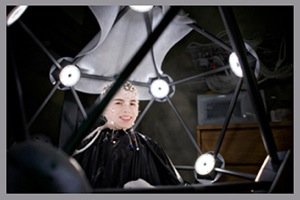

About DEL

The collaborative group of DEL investigators are engaged in neuroscience research with infants, school-aged children, adolescents, and young through elderly adults. The themes of our research include reward processing, social cognition, emotion regulation, and cognitive change in both normative development and clinical populations.
The DEL provides facilities and support for dense array electroencephalography using three 128 or 256 channel systems. Also available is integrated eye tracking to allow precise localization of visual attention during individual trials and photogrammetry to permit more precise source localization of electrical signals and integration with structural and functional MRI.
Additionally, the DEL provides resources for studying peripheral physiology including acoustic startle, electrocardiogram, and skin conductance that may be recorded simultaneously with EEG.
At the core of this resource are two stationary high-density EEG systems, located in adjacent suites at the CSC. A third portable dense array system is available for off site studies. Brain source analysis and fMRI coregistration are accomplished by way of a photogrammetry system that builds 3-dimensional head models for improved cortical source mapping.
Integrated with EEG assessment, the DEL has peripheral psychophysiological measurement including heart rate, skin conductance, facial EMG and eye-blink startle by way of a Coulbourn Instruments LabLinc system. A second identical Coulbourn system is used for analogous assessment at Yale’s Anlyan Neuroimaging Center.
Complementing its comprehensive biosignal assessment capacity, the DEL has an armamentarium of experimental paradigms (visual, auditory, contextual) for studying basic processes of learning, memory and emotion as well as more complex paradigms for the study of decision-making and social cognition.
The DEL has developed a range of paradigms in the E-Prime experimental design suite to administer visual, auditory, tactile and behavioral assessments. In addition to E-Prime, our research staff possesses technical expertise in MATLAB, BESA, Netstation, and a variety of statistical analysis packages.